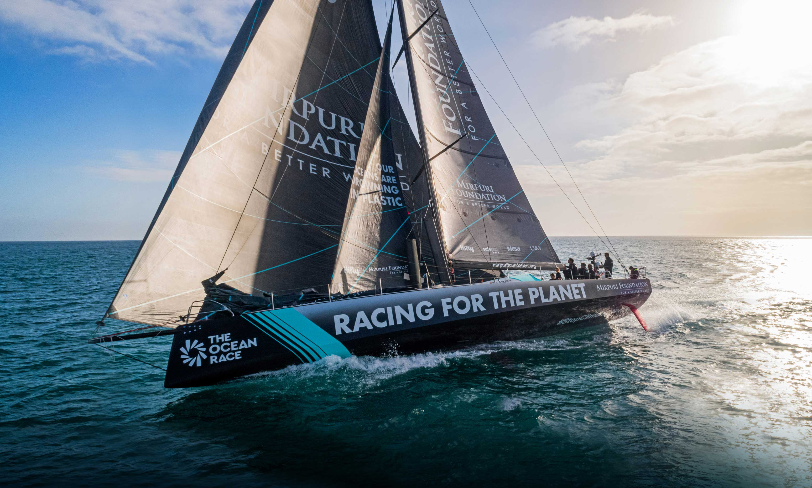
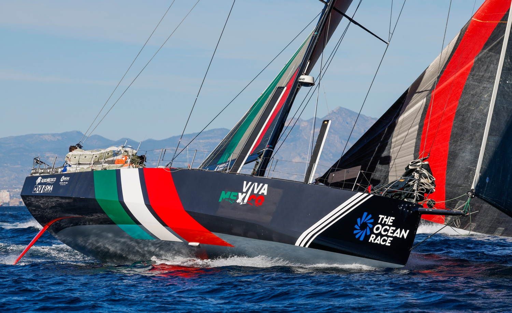
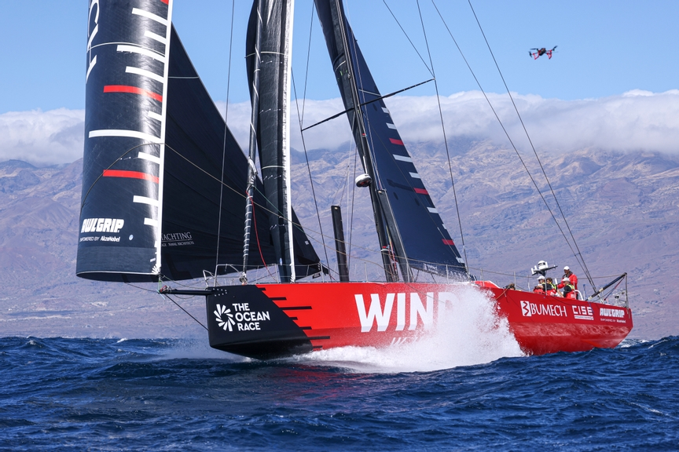
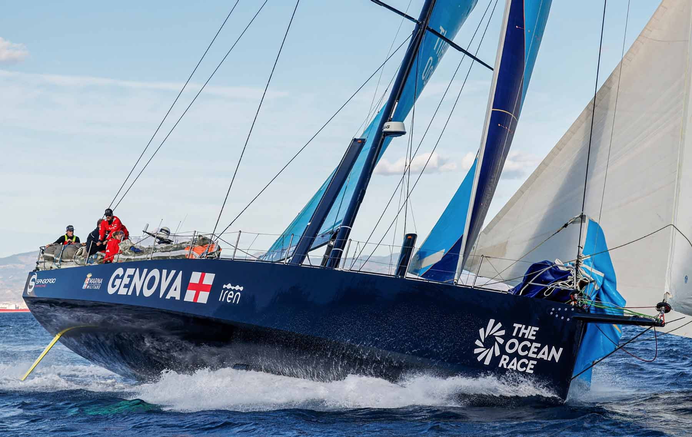

VO65
Los VO65 (Volvo Open) se diseñaron para la edición de la ocean race 2014 - 2015 para sustituir a los VO70 o como dierón más rendimiento y más espectaculo el comite de regata decidío dejar los VO65 como primer barco. Debido a que hay menos seguridad en el sentido de que hay que realizar varios turnos que requieren mas personal encontramos 11 personas formando el equipo.
EQUIPOS VO65
Los equipos que forman parte en la categoria VO65 en la edición de 2023 son:
Mirpuri Fundation Racing Team
Patrón: António Fontes
Nacionalidad del barco: Portugal
Tripulantes: António Fontes, Bernardo Freitas, Diogo Cayolla, Matilde Pinheiro, Federico Melo, Hugo Rocha, Fran Maia, Mariana Lobato, Francisca Pinho, Francisco Caí y Robin Christol
Viva Mexico
Patrón: Erik Brockmann
Nacionalidad del barco: Mexico
Tripulantes: Erik Brockmann, Roberto Bermúdez, Carlos Bermúdez, Jaime Arbones, Tania Elias, Juan Varela, Luis Medina, Annemieke Bes y Dominique Knuppel.
WindWhisper Racing Team
Patrón: Pablo Arrarte
Nacionalidad del barco: Polonia
Tripulantes: Pablo Arrarte, Stan Bajerski, Magdalena Kwasna, Willy Altadill, Szymon Cierzan, Aksel Magdahl, Liz Wardley, Antonio Cuervas, Mateusz Gwóźdź, Marcin Sutkowski, Arianne van de Loosdrecht, Tomasz Piotrowski.
Austrian Ocean Racing powered by Team Genova
Patrón: Gerwin Jansen
Nacionalidad del barco: Italia/Austria
Tripulantes: Gerwin Jansen, Alberto Riva, Stefan Leitner, Oliver Kobale, Anna Luschan, Daniel Dagenais, Cecilia Zorzi, Jolbert van Dijk, Ruaridh Wright, Michiel Goegebeur, Deborah Blair.
TEAM JAJO

Patrón: Jelmer van Beek
Nacionalidad del barco: Holanda
Tripulantes:Jelmer van Beek, Rutger Vos, Jorden van Rooijen, Bouwe Bekking, Maja Micinska, Joy Eilish, Laura van Veen, Max Deckers, Simbad Quiroga, Brend Schuil, Gregg Lowden .
Ambersail 2

Patrón: Rokas Milevičius
Nacionalidad del barco: Lituania
Tripulantes: Rokas Milevičius, Sigitas Babilius, Martin Volkovicki, Anastasia Kolesnichenko, Martynas Karpavicius, Sofiia Naumenko, Deimantė Jarmalavičiūtė, Domantas Juškevičius, Wiktor Kobryn, Jonas Drąsutavičius, Saulius Pajarskas.